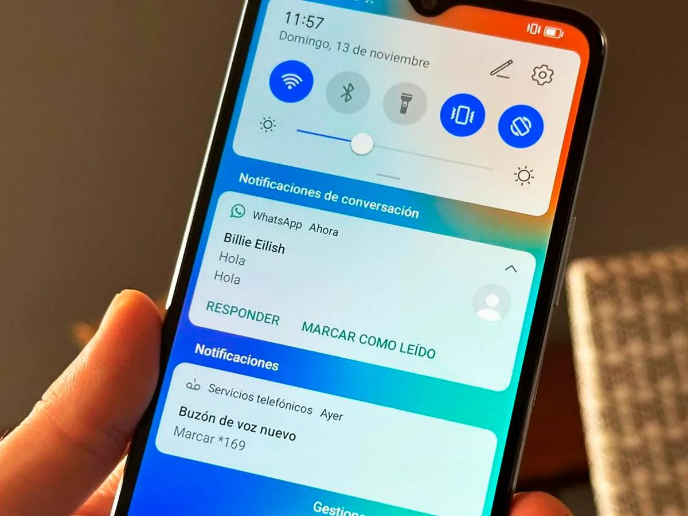

Temas de Desarrollo Móvil
Gestión de Sensores
Tipos de sensores en dispositivos moviles: Acelerómetros, giroscopios, magnetómetros, sensores de proximidad, sensores de luz ambiental, barómetros y sensores de frecuencia cardíaca.
Proceso de gestión de sensores
- Habilitación: Activar el sensor necesario en el dispositivo.
- Obtención: Recopilar los datos del sensor utilizando las API del sistema operativo.
- Procesamiento: Filtrar, transformar y analizar los datos para extraer información útil.
Servicios y Notificaciones
Los servicios permiten ejecutar tareas en segundo plano.
Definición y tratamiento de tareas en segundo plano y notificaciones
Las tareas en segundo plano se definen mediante servicios (en Android) o BackgroundTasks (en iOS) que ejecutan operaciones sin interrumpir la experiencia del usuario. Estas tareas pueden incluir sincronización de datos, actualizaciones y notificaciones.
Tratamiento de notificaciones
El tratamiento de notificaciones implica:
- Recepción: Escuchar eventos del sistema o de servidores remotos.
- Preparación: Crear una notificación con título, mensaje e ícono.
- Presentación: Mostrar la notificación al usuario.
- Interacción: Permitir al usuario interactuar con la notificación (ej. abrir la app).
Implementación de proveedores de contenido, tareas en segundo plano y notificaciones
- Proveedores de contenido: Se implementan definiendo una clase que extiende ContentProvider (en Android) y gestionando el acceso a datos estructurados.
- Tareas en segundo plano: Utilizar IntentService o JobScheduler (en Android) o BGTaskScheduler (en iOS) para ejecutar tareas asíncronas.
- Notificaciones: Utilizar las API de notificaciones del sistema operativo (ej. NotificationManager en Android, UNUserNotificationCenter en iOS) para crear y mostrar notificaciones.
Servicios de cómputo en la nube aplicables a la programación de aplicaciones móviles
Servicios: Almacenamiento en la nube (ej. Firebase Storage, AWS S3), bases de datos en la nube (ej. Firebase Realtime Database, MongoDB Atlas), autenticación (ej. Firebase Authentication, AWS Cognito), funciones sin servidor (ej. Firebase Cloud Functions, AWS Lambda).
Documentación oficialLibrerías y Toolkits
librerías de funciones especializadas para aplicaciones móviles
Las librerías y toolkits son conjuntos de código predefinido que facilitan el desarrollo de aplicaciones móviles al proporcionar funcionalidades específicas listas para usar.
Tipos de librerías y toolkits
- UI: React Native, Flutter, Xamarin.Forms (para interfaces de usuario multiplataforma).
- Red: Retrofit, Volley (para Android), Alamofire (para iOS) (para comunicación con servidores).
- Imágenes: Picasso, Glide (para Android), SDWebImage (para iOS) (para gestión de imágenes).
- Bases de datos: Realm, SQLite (para almacenamiento local).
Depuración y Seguridad
Herramientas de depuración.
Herramientas comunes:
- Android Debug Bridge (ADB)
- Xcode Debugger
- Emuladores/Simuladores
- Herramientas de análisis estático de código
Registros del sistema para identificar defectos
Se utilizan para rastrear el flujo de ejecución, identificar errores, advertencias y excepciones, y analizar el estado de la aplicación en diferentes momentos. Proceso de refactorización de código.
- Proceso: Analizar el código existente, identificar áreas de mejora, aplicar cambios pequeños y probables, y verificar que la aplicación siga funcionando correctamente.
- Mecanismos de seguridad en Apps: permisos, archivos de configuración, cifrado y medios de autenticación con servicios externos.
Mecanismos:
- Permisos: Solicitar acceso a recursos del sistema (ej. cámara, ubicación).
- Archivos de configuración: Proteger información sensible (ej. claves API) con cifrado.
- Cifrado: Utilizar algoritmos de cifrado para proteger datos en tránsito y en reposo.
- Autenticación: Implementar autenticación de dos factores y verificar la identidad de los usuarios.
Empaquetado y Despliegue
Proceso para convertir tu proyecto en una APK lista para distribución.
Tipos de empaquetado en App.
- Android: APK (Android Package Kit), AAB (Android App Bundle).
- iOS: IPA (iOS App Store Package).
- Herramientas y procedimientos de empaquetado de App.
- Herramientas: Android Studio, Gradle (para Android), Xcode (para iOS).
- Procedimientos: Configurar el archivo de manifiesto, compilar el código, firmar la aplicación y generar el paquete.
Diferencias entre plataformas móviles en el empaquetado y despliegue
- ¿Cómo diferenciar las herramientas y procedimientos de empaquetado?
- Android: Utiliza build.gradle para configurar el proceso de compilación y empaquetado.
- iOS: Utiliza Xcode para configurar el proyecto y generar el archivo IPA.
- Herramientas de despliegue de App.
- Herramientas: Google Play Console (para Android), App Store Connect (para iOS), Firebase App Distribution, TestFlight.
Plataformas y Canales de Distribución
Canales de distribución de App: requisitos y políticas.
- Cumplir con las políticas de contenido, privacidad y seguridad de cada plataforma.
- Políticas: Respetar las directrices de diseño, evitar prácticas engañosas y proteger la información del usuario.
Diferencias entre plataformas y canales de distribución
Canales:- Oficiales: Google Play Store, Apple App Store (mayor alcance, pero más restricciones).
- Distribución directa: A través de sitios web o correos electrónicos (mayor control, pero menor alcance).
- Tiendas de terceros: Menor control y seguridad.
- Escenarios de uso de plataformas y canales de distribución.
- Tiendas oficiales: Para llegar a la mayor cantidad de usuarios y garantizar la seguridad.
- Distribución directa: Para pruebas internas, versiones beta o aplicaciones empresariales.
Tipos de pruebas para la distribución de Apps: abiertas, cerradas e internas.
Tipos:
- Internas: Pruebas realizadas por el equipo de desarrollo.
- Cerradas (Beta): Pruebas con un grupo limitado de usuarios.
- Abiertas (Alpha): Pruebas con un público más amplio antes del lanzamiento oficial.